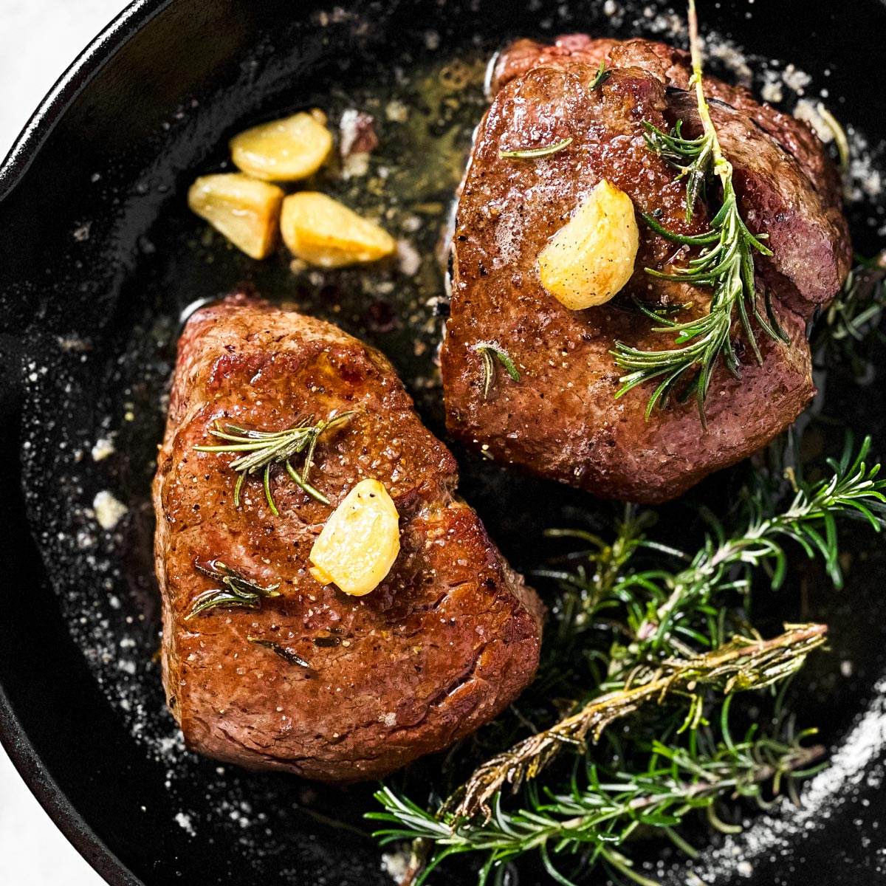

Steak Night

Ingredients
- 1 filet mignon from Richard's Meat Market
- 2 cloves of garlic
- 3 stems of thyme
- 3 tablespoons of butter
Steps
- Preheat oven to 425 degrees
- Set out filet for 20 minutes to room temp
- Head cast iron skillet until hot and add olive oil
- Place filet center skillet and let sit for 2 minutes to sear
- Flip and sit for 2 min. add tbsp of butter, garlic, and thyme
- Sear edges of filet for 1 minute each side
- Place skillet in oven for 5 minutes
- Let steak rest for 5 minutes